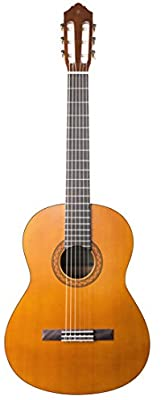

Kay es un ávido y dotado músico que toca la guitarra y los teclados. Tiene un especial interés por los órganos barrocos. También fue un guitarrista profesional de jazz y de rock and roll. Está casado con Bonnie MacBird, escritora/productora/actriz/artista.